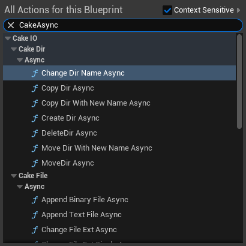
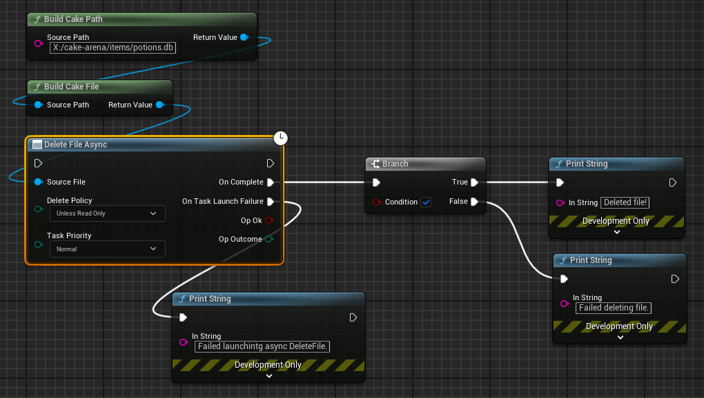
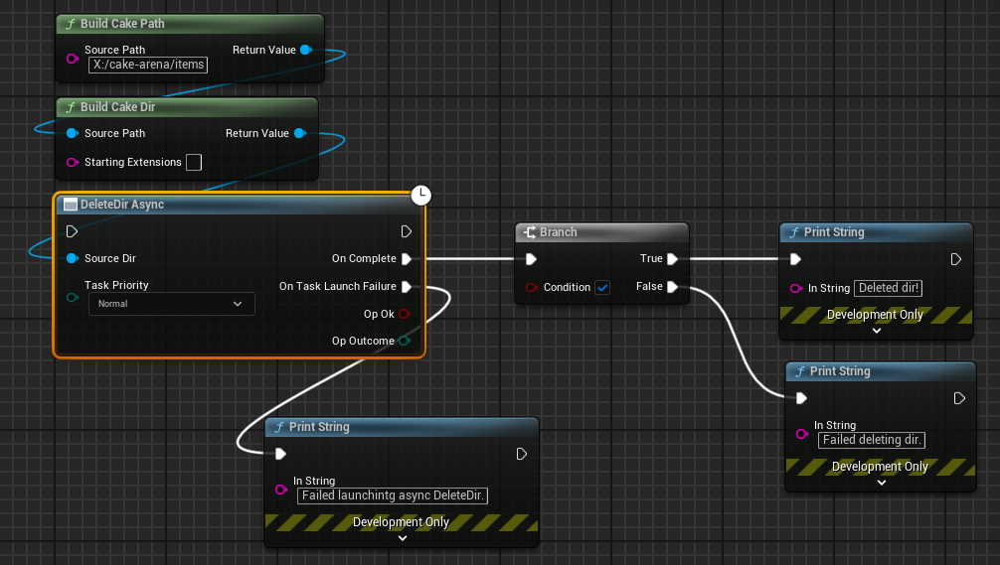

CakeAsyncIO
CakeAsyncIO Overview
Cake IO offers asynchronous versions of its core IO functions. The usage of these asynchronous functions is similar to the synchronous functions, but with a few changes. This documentation will not exhaustively cover each function, since the functions behave identically to their synchronous counterparts, with the exception that they are executed in an asynchronous context. Instead, this documentation will focus on the differences between the synchronous / asynchronous interfaces and provide a few examples involving them. Finally, there are a few special interfaces unique to CakeAsyncIO which will be covered.
Warning
This library and its documentation require a firm understanding of Cake IO fundamentals and its core objects.
Blueprint Differences
Blueprint cannot safely support all asynchronous interfaces offered by CakeAsyncIO. This may change in the future as Unreal Engine and Cake IO evolve, but for now the following asynchronous interfaces are not available in Blueprint:
- Directory Traversal
- CakeMix GatherCustom functions
- CakeAsyncIO Batch Operations
Using CakeAsyncIO
The C++ interfaces for asynchronous IO are contained within the CakeAsyncIO namespace.
Note
All CakeAsyncIO interfaces can be found in the following header:
It is important to understand that CakeAsyncIO is not meant to be the single solution for any asynchronous code involving Cake IO objects and interfaces. This is a key difference between the C++ and Blueprint APIs for CakeAsyncIO. Blueprint offers much less options to its users for asynchronous interactions, whereas asynchronous code in C++ is complicated and Unreal Engine offers many different approaches for asynchronous execution. Being a general purpose API it cannot meet every requirement for every user and thus developing your own implementation often can be the correct solution since it will give more control over error handling, performance, and other characteristics. Using the core Cake IO objects and interfaces in an asynchronous context is quite straightforward since the objects are lightweight and easy to pass by value. The source code for CakeAsyncIO can also be viewed as a reference point when developing your own async implementations.
Cake IO provides async functionality in the form of latent Blueprint nodes. As with any Blueprint latent node we can only use these nodes in event graphs:
Typing "CakeAsync" in an action window will show us every async function available to us:

A more precise way to filter is to drag off the node of a relevant Cake object, such as a CakeFile, and then type "Async" to find all the async nodes related to that object:
AsyncIO Key Differences
While much of the asynchronous interfaces mirror their synchronous counterparts, there are some key differences. It is important to learn these differences before we look at specific usage examples.
Async Function Return Type
All Async functions return an FCakeAsyncTask, which is just a minimal type wrapper that contains the Unreal TTask type utilized by CakeAsyncIO:
struct FCakeAsyncTask
{
UE::Tasks::TTask<void> Task{};
FORCEINLINE operator bool() { return Task.IsValid(); }
};
Sometimes callers might want to cache the Task, but often we just need to know whether the task launched successfully. To check this, we just need to ensure that the inner TTask's IsValid() member function returns true. Operator bool has been defined to return this so that we can use simple code forms like:
if (!CakeAsyncIO::SomeAsyncFunction())
{ UE_LOG(LogTemp, Error, TEXT("Some function failed to launch!")); }
Note
TTask is defined in Tasks/Task.h
Async Function Signatures
The function signatures for async IO operations follow a regular pattern. As mentioned earlier, all functions return FCakeAsyncTasks. Any types that the synchronous IO operation would return instead will be supplied via parameters to a callback that is invoked when the async operation is done.
The parameter lists will follow a standard ordering: if there is a target object (e.g., the file for a move operation), the target object is the first parameter. Next, all non-optional parameters used by the IO operation will be listed. The last non-optional parameter will always be the async specific callback invoked when the async operation is done. Generally this callback will also pass back the results of the operation, which will vary in type based upon the operation being used. The first optional parameter in an asynchronous function signature will be an FCakeSettingsAsyncTask. We can use this to customize the behavior of the asynchronous operation. Finally, if there are any remaining optional parameters that the IO operation takes they will be listed after the settings struct.
Let's look at an example by comparing CakeDir's CreateDir signature versus the CakeAsyncIO CreateDir signature:
// CakeDir
[[nodiscard]] FCakeResultDirIO CreateDir(
ECakePolicyMissingParents MissingParentPolicy = CakePolicies::MissingParentsDefault
) const;
// CakeAsyncIO
[[nodiscard]] FCakeAsyncTask CreateDir(
FCakeDir SourceDir,
FCakeAsyncDoneDirIO TaskDoneCallback,
FCakeSettingsAsyncTask TaskSettings = {},
ECakePolicyMissingParents MissingParentPolicy =
CakePolicies::MissingParentsDefault
);
Let's compare the differences of the parameter lists. Since CreateDir is a member function on an FCakeDir object, the async variant needs the object it should call CreateDir on as the first parameter. Secondly, we need to provide a callback, which is a delegate that will receive the FCakeResultDirIO returned from the CreateDir operation. There are no required parameters for CakeDir's CreateDir function, and so the first optional parameter in CakeAsyncIO's CreateDir function is the async settings struct. The last parameter is the optional missing parents policy parameter used by CakeDir's CreateDir.
Let's try calling both the synchronous and asynchronous versions using the same FCakeDir object. For this example, we will assume that the default values for all optional parameters are acceptable.
FCakeDir GameDir{ FCakePath{TEXTVIEW("X:/cake-arena")} };
auto ReportCreateDirResult = [](FCakeResultDirIO DirResult)
{
UE_LOG(LogTemp, Warning,
TEXT("CreateDir Result: [%s]"), *DirResult.ToString());
};
// Synchronous Version
ReportCreateDirResult(GameDir.CreateDir());
// Asynchronous Version
if (!CakeAsyncIO::Dir::CreateDir(
GameDir,
FCakeAsyncDoneDirIO::CreateLambda(ReportCreateDirResult)))
{
UE_LOG(LogTemp, Warning,
TEXT("AsyncCreateDir failed to launch!"));
}
As this example shows, even in the simplest scenario calling the asynchronous version of an IO operation requires more complex code.
Tip
In general, only use asynchronous code when the context truly requires it. The advantages provided by asynchronous code should be proven (via profiling or other means) to be worth the cost in complexity and maintenance. If you can afford to get away with using the synchronous version of a function, do so!
Task Priority
Every Cake IO async node has a Task Priority parameter. This is an ECakeTaskPriority, which is an enum that partially mirrors a native Unreal enum:
This priority helps the Unreal Task system scheduler select when the task should be run. In many situations, you probably won't have to change this from the default value of Normal. If you have a task that isn't a high priority, you can use one of the Background settings to defer the task to a lower priority. Use profiling to help inform and guide your decisions about which priority works best for your situation.
The priority order from highest to lowest is as follows:
- High
- Normal
- Background High
- Background Normal
- Background Low
Failure to Launch
Every async node can fail to properly launch its async task due to some form of invalid arguments. Usually this occurs when a user sends in an invalid reference or forgets to submit a valid callback. When an async node fails to launch, the OnTaskLaunchFailure path will be taken. Assuming the task launches successfully, the associated Complete path will be taken when the async operation resolves:
Tip
If you have Cake IO logging enabled, you will get a warning that gives more context regarding why the task could not be launched.
Async Examples
File IO
Let's examine async File IO using the async version of CakeFile's DeleteFile. Since we are using the asynchronous function which is not a member function, we need to pass the CakeFile object as the first argument to the async version.
The namespace CakeAsyncIO::File contains asynchronous versions of all the FCakeFile IO Operations.
The result callback signature for file IO requires one parameter: an FCakeResultFileIO that the IO operation returned.
FCakeFile FileItemsDb{
FCakePath{ TEXTVIEW("X:/cake-arena/items/potions.db") }
};
auto ReportDetails = [](FCakeResultFileIO DeleteResult) -> void
{
UE_LOG(LogTemp, Warning, TEXT("Result of the file deletion operation: [%s]"),
*DeleteResult.ToString())
};
if (!CakeAsyncIO::File::DeleteFile(
FileItemsDb,
FCakeAsyncDoneFileIO::CreateLambda(ReportDetails)))
{
UE_LOG(LogTemp, Warning,
TEXT("AsyncCreateDir failed to launch!"));
}
Before moving on, we should also note that reading file data is slightly different with CakeAsyncIO. To keep lifetime management simple, only the read interfaces which return TCakeOrderFile types are supported.
Let's look at a brief example using ReadTextFile:
FCakeFile FileReadme{
FCakePath{ TEXTVIEW("X:/cake-arena/readme.txt") }
};
auto OnReadTextComplete = [](TCakeOrderFile<FString> ReadText) -> void
{
if (ReadText)
{
UE_LOG(LogTemp, Warning, TEXT("Readme file data: [%s]"),
*ReadText.Order);
}
};
CakeAsyncIO::File::ReadTextFile(
FileReadme,
FCakeAsyncDoneFileReadText::CreateLambda(OnReadTextComplete)
);

Directory IO
In this example, we'll use an async version of DeleteDir to delete the directory our CakeDir object references.
The namespace CakeAsyncIO::Dir contains asynchronous versions of all the FCakeDir IO Operations.
The result callback signature for directory IO requires one parameter: an FCakeResultDirIO that the IO operation returned.
FCakeDir DirItems{
FCakePath{ TEXTVIEW("X:/cake-arena/items") }
};
auto OnDeleteDirComplete = [](FCakeResultDirIO DeleteResult) -> void
{
if (DeleteResult)
{
UE_LOG(LogTemp, Warning, TEXT("The directory was successfully deleted!"));
}
else
{
UE_LOG(LogTemp, Error, TEXT("Failed deleting directory: [%s]"),
*DeleteResult.ToString())
}
};
if (!CakeAsyncIO::Dir::DeleteDir(
DirItems,
FCakeAsyncDoneDirIO::CreateLambda(OnDeleteDirComplete)))
{
UE_LOG(LogTemp, Error,
TEXT("AsyncCreateDir failed to launch!"));
}

File / Directory IO Pitfalls
CakeAsyncIO interfaces use their own private copy of source objects in order to eliminate many potential lifetime problems, and this has important implications in IO operations that change the path information on file or directory objects. Normally, when a move or change name operation (e.g., MoveFile or ChangeDirName) succeeds, the associated object automatically updates its path information. However, since a copy of the source object is used in asynchronous contexts, this means that your source object will not update itself when the operation occurs. Therefore, if you plan on using an object after an async move / change name operation, you must update the path information manually.
FCakeFile FileItemsDb{
FCakePath{ TEXTVIEW("X:/cake-arena/items/items.db") }
};
FCakePath DestDir{ TEXTVIEW("Y:/cake-archive/items/") };
auto OnAsyncMoveComplete =
[FileItemsDb, DestDir] (FCakeResultFileIO MoveResult) mutable -> void
{
if (MoveResult)
{
FCakePath NewPath{
FileItemsDb.GetPath().CloneWithNewParent(DestDir)
};
FileItemsDb.SetPath(NewPath);
UE_LOG(LogTemp, Warning, TEXT("New file path is: [%s]"),
*FileItemsDb.GetPathString());
}
else
{
UE_LOG(LogTemp, Error, TEXT("Failed moving file: [%s]"),
*MoveResult.ToString())
}
};
if (!CakeAsyncIO::File::MoveFile(
FileItemsDb,
DestDir,
FCakeAsyncDoneFileIO::CreateLambda(OnAsyncMoveComplete)))
{
UE_LOG(LogTemp, Warning,
TEXT("AsyncMoveFile failed to launch!"));
}
Directory Traversal
All async traversal operations are contained in namespace CakeAsyncIO::Dir.
Asynchronous directory traversal is quite similar to synchronous traversal, but we must always remain cognizant of the fact that our traversal callback is being invoked on a different thread. This means that all sorts of wonderful thread-related nightmares can befall upon us, so we must be vigilant when we choose to use this asynchronous traversal.
We must be very careful regarding what sort of data we might mutate. If we are doing things like adding data to a collection, it is the caller's burden to ensure that everything is handled in a thread-safe manner. Whenever possible, favor interfaces like CakeMix's Gather or GatherCustom, which will build an isolated container during the asynchronous operation and then pass it back when it can be safely used.
We'll now look at two examples, one involving unguarded traversal and the other involving search traversal. Our unguarded traversal will simply print the directory names it encounters, and our search traversal will look for a readme file and stop immediately once the first file that matches our criteria is found.
As with our File / Directory IO result callbacks, traversal callbacks just require one parameter, which is the associated result type for that traversal style. This means FCakeResultTraversal for unguarded / guarded traversals, and FCakeResultSearch for search traversals.
FCakeDir DirItems{
FCakePath{ TEXTVIEW("X:/cake-arena/items") }
};
auto OnTraversalComplete = [](FCakeResultTraversal ResultTraversal) -> void
{
UE_LOG(LogTemp, Warning, TEXT("Traversal Result: [%s]"), *ResultTraversal.ToString());
};
CakeAsyncIO::Dir::TraverseSubdirs(
DirItems, ECakePolicyOpDepth::Deep,
[](FCakeDir NextDir) -> void {
UE_LOG(LogTemp, Warning, TEXT("Found subdir: [%s]"), *NextDir.CloneDirName())
},
FCakeAsyncDoneTraversal::CreateLambda(OnTraversalComplete)
);
auto OnSearchComplete = [](FCakeResultSearch ResultSearch) -> void
{
UE_LOG(LogTemp, Warning, TEXT("Search Result: [%s]"), *ResultSearch.ToString());
};
CakeAsyncIO::Dir::TraverseSearchFiles(
DirItems, ECakePolicyOpDepth::Deep,
[](FCakeFile NextFile) -> ECakeSignalSearch {
FString FileName{ NextFile.CloneFileName() };
if (FileName.Contains(TEXT("readme")))
{
UE_LOG(LogTemp, Warning, TEXT("Readme File found at: [%s]"),
*NextFile.GetPathString());
return ECakeSignalSearch::Success;
}
return ECakeSignalSearch::Continue;
},
FCakeAsyncDoneSearch::CreateLambda(OnSearchComplete)
);
Directory traversal is not currently supported for Blueprint due to limitations inherent with UObjects and multi-threaded contexts. As Unreal Engine evolves Cake IO will be looking for opportunities to add this functionality to the Blueprint API.
CakeMix
CakeAsyncIO provides asynchronous versions of all of the CakeMix IO functions. For our example, we'll use the async version of CountSubdirs.
Async versions of CakeMixLibrary functions are located under the namespace CakeAsyncIO::CakeMix. The CakeMixLibrary namespace is mirrored underneath, so if a function is located in CakeMixLibrary::Dir, then the async function is found in CakeAsyncIO::CakeMix::Dir.
Since the Count interfaces return an FCakeMixCount our callback's parameter will need to be of the same type.
FCakeDir DirCakeArena{ FCakePath{TEXTVIEW("X:/cake-arena/")} };
auto OnCountSubdirsComplete = [](FCakeMixCount CountSubdirs) -> void
{
if (CountSubdirs)
{
UE_LOG(LogTemp, Warning, TEXT("We have [%d] subdirectories in our main directory!"),
CountSubdirs.Count);
}
};
CakeAsyncIO::CakeMix::Dir::CountSubdirs(
DirCakeArena, ECakePolicyOpDepth::Deep,
FCakeAsyncDoneDirCount::CreateLambda(OnCountSubdirsComplete)
);
Info
The GatherCustom functions from CakeMix are not currently supported.
Unique Interfaces
Batch Operations
A batch operation runs a user-supplied callback on an array of CakeFiles or CakeDirs in an asynchronous context. There are two styles of batch operations supported: one style that reports the overall progress of the operation at each step via an extra callback, and one that does not report any progress.
Tip
By combining some form of Gather/GatherCustom operation with batch processing, one can achieve a wide variety of complex async IO operations in a simple and safe way.
The batch operation API is defined in the namespace CakeAsyncIO::BatchOp.
We have four functions at our disposal: RunBatchOpFiles, RunBatchOpDirs, RunBatchOpFilesWithProgress, and RunBatchOpDirsWithProgress.
Each batch processing function takes a callback which will receive each corresponding CakeFile or CakeDir object from the batch. This callback returns a BatchOp signal, which allows the caller to halt batch operations early if errors are encountered.
For our example we'll make a simple action callback used on a batch of files. We'll read the text data from each file but we'll halt the batch early if any of the read operations fail.
auto FileBatchAction = [](FCakeFile NextFile) -> ECakeSignalBatchOp
{
if (TCakeOrderFile<FString> ReadText = NextFile.ReadTextFile())
{
UE_LOG(LogTemp, Warning, TEXT("[%s] data: [%s]"), *NextFile.CloneFileName(), *ReadText.Order);
return ECakeSignalBatchOp::Continue;
}
else
{
return ECakeSignalBatchOp::Abort;
}
};
The done callback will return an FCakeResultBatchOp. This is a simple result type that wraps an ECakeOutcomeBatchOp and also includes a field that indicates the total number of batch elements that were processed.
auto OnBatchOpComplete = [](FCakeResultBatchOp BatchOpResult) -> void
{
if (BatchOpResult)
{
UE_LOG(LogTemp, Warning,
TEXT("Successfully processed [%d] file(s)."),
BatchOpResult.TotalProcessed
);
}
};
We submit a TArray of our corresponding Cake IO object to the batch processing function, followed by the action callback, and our done callback:
FCakeDir DirCakeArena{
FCakePath{ TEXTVIEW("X:/cake-arena/") }
};
auto OnBatchOpComplete = [](FCakeResultBatchOp BatchOpResult) -> void
{
if (BatchOpResult)
{
UE_LOG(LogTemp, Warning,
TEXT("Successfully processed [%d] file(s)."),
BatchOpResult.TotalProcessed
);
}
};
auto FileBatchAction = [](FCakeFile NextFile) -> ECakeSignalBatchOp
{
if (TCakeOrderFile<FString> ReadText = NextFile.ReadTextFile())
{
UE_LOG(LogTemp, Warning, TEXT("[%s] data: [%s]"), *NextFile.CloneFileName(), *ReadText.Order);
return ECakeSignalBatchOp::Continue;
}
else
{
return ECakeSignalBatchOp::Abort;
}
};
FCakeMixBatchFiles Files{
CakeMixLibrary::Dir::GatherFiles(DirCakeArena, ECakePolicyOpDepth::Deep)
};
if (Files)
{
CakeAsyncIO::BatchOp::RunBatchOpFiles(
Files.Batch,
FCakeAsyncBatchActionFile::CreateLambda(FileBatchAction),
FCakeAsyncDoneBatchOp::CreateLambda(OnBatchOpComplete)
);
}
If we want to be informed of the progress of a batch operation, this can be accomplished by using the WithProgress variant of our desired batch process function.
This version adds two parameters to our function call: we need to supply a callback that can receive the progress information, and we need to pass a special enum that determines which thread the progress callback should be called in: EProgressCbThread. This enum is defined directly in the CakeAsyncIO namespace:
enum struct EProgressCbThread : uint8
{
/** Use the thread used by the current async process (NEVER guaranteed to be the game thread). */
AsyncThread,
/** Use the game thread to report progress. */
GameThread,
MAX
};
Using the game thread can dramatically simplify the receiving code, especially if you are using that information to inform GUI changes. However, sending progress reports via the game thread incurs extra overhead -- be sure to profile in any performance sensitive contexts.
The progress callback parameter list needs to take the following form: an int32 representing the current element number being processed, an int32 representing the total element count, and a float representing the percent complete the entire operation is:
auto BatchProgressHandler = [](
int32 CurrentStep, int32 MaxStep, float PercentComplete) -> void
{
UE_LOG(LogTemp, Warning,
TEXT("File Batch Progress: %d/%d (%2f)"),
CurrentStep, MaxStep, PercentComplete
);
};
With a few modifications, we can rework the previous example to incorporate progress reporting:
FCakeDir DirCakeArena{ FCakePath{TEXTVIEW("X:/cake-arena/")} };
auto OnBatchOpComplete = [](FCakeResultBatchOp BatchOpResult) -> void
{
if (BatchOpResult)
{
UE_LOG(LogTemp, Warning,
TEXT("Successfully processed [%d] file(s)."),
BatchOpResult.TotalProcessed
);
}
};
auto BatchProgressHandler = [](
int32 CurrentStep, int32 MaxStep, float PercentComplete) -> void
{
UE_LOG(LogTemp, Warning,
TEXT("File Batch Progress: %d/%d (%2f)"),
CurrentStep, MaxStep, PercentComplete
);
};
auto FileBatchAction = [](FCakeFile NextFile) -> ECakeSignalBatchOp
{
if (TCakeOrderFile<FString> ReadText = NextFile.ReadTextFile())
{
UE_LOG(LogTemp, Warning, TEXT("[%s] data: [%s]"),
*NextFile.CloneFileName(),
*ReadText.Order
);
return ECakeSignalBatchOp::Continue;
}
else
{
return ECakeSignalBatchOp::Abort;
}
};
FCakeMixBatchFiles Files{
CakeMixLibrary::Dir::GatherFiles(DirCakeArena, ECakePolicyOpDepth::Deep)
};
if (Files)
{
CakeAsyncIO::BatchOp::RunBatchOpFilesWithProgress(
Files.Batch,
FCakeAsyncBatchActionFile::CreateLambda(FileBatchAction),
FCakeAsyncOpProgress::CreateLambda(BatchProgressHandler),
CakeAsyncIO::EProgressCbThread::GameThread,
FCakeAsyncDoneBatchOp::CreateLambda(OnBatchOpComplete)
);
}
Batch processing is not currently supported for Blueprint due to limitations inherent with UObjects and multi-threaded contexts. As Unreal Engine evolves Cake IO will be looking for opportunities to add this functionality to the Blueprint API.